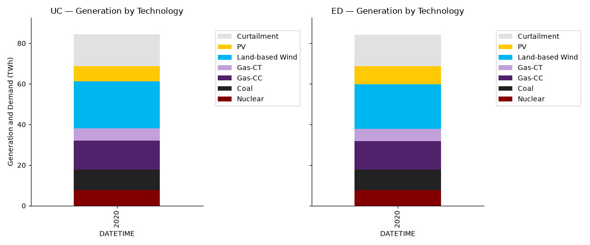
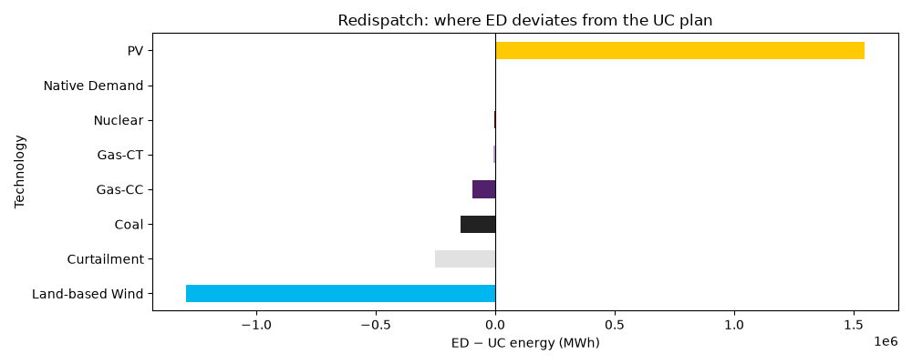
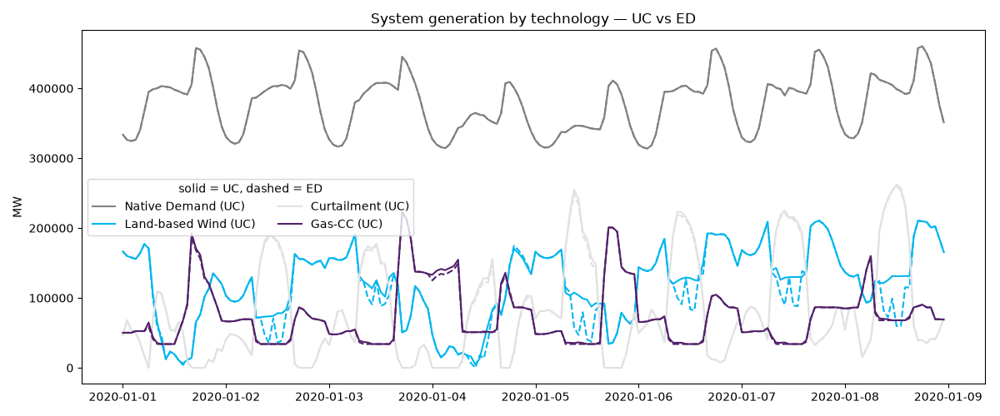
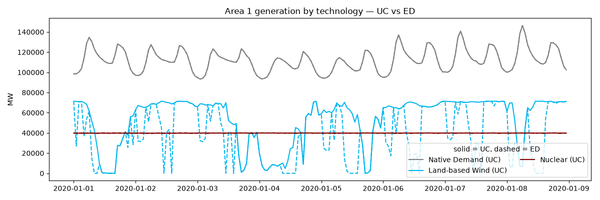
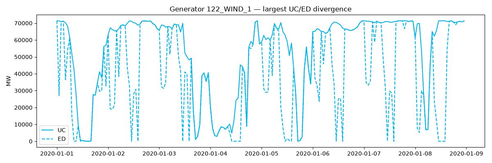
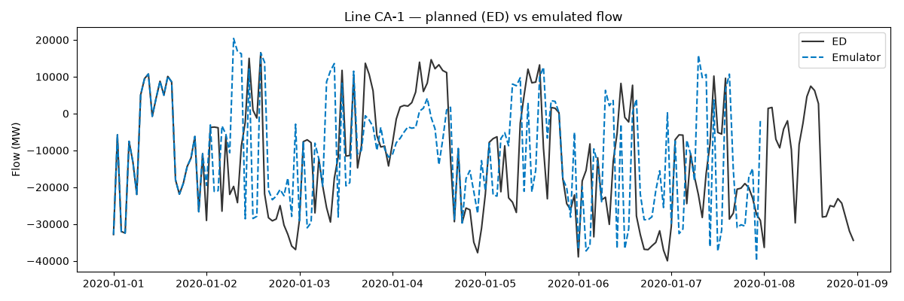

Note
Go to the end to download the full example code.
Model vs Model: UC, ED, and Emulator from One Store#
The Sienna fixture’s simulation store contains three models solved in
sequence — unit commitment (UC), economic dispatch (ED, with UC
commitments fed forward), and an Emulator stage. from_simulation_models
splits the store into a scenario per model, and MultiScenario puts
them behind one API with Scenario as the outer column level — the
same machinery GAT uses to compare scenarios across tools.
Shown here, top-down: system stacks and the redispatch delta, then per-technology timeseries (solid vs dashed), then a single generator, then a single line (ED vs Emulator).
import warnings
warnings.filterwarnings("ignore", category=DeprecationWarning)
# The fixture has no storage; MultiScenario's pass-through getters use
# defaults, so silence the resulting missing-dataset UserWarnings.
warnings.filterwarnings("ignore", category=UserWarning)
import matplotlib.pyplot as plt
from gat.scenariohandlers import MultiScenario, SiennaScenario
import gat.quickplots as qp
from gat.quickplots.utils import get_colormap
# GAT's standard technology colors — used for every comparison below so
# a technology keeps its identity across panels and against the stacks.
tech_colors = get_colormap()
# These examples use the in-repo Sienna RTS-GMLC fixture. Regenerate it via
# `make sienna-fixture-v4`. For project-based workflows, use `gat.load(...)`
# instead — see docs/source/python_api_load.md.
sienna_v4 = "../../example_data/sienna/v4"
scenarios = SiennaScenario.from_simulation_models(
simulation_files=f"{sienna_v4}/simulation_store.h5",
system_file=f"{sienna_v4}/sys.json",
)
print("models in store:", list(scenarios))
# The two optimization stages, behind one MultiScenario API.
ms = MultiScenario({name: scenarios[name] for name in ("UC", "ED")})
models in store: ['ED', 'UC', 'Emulator']
Generation stacks, one per model#
dispatch = {}
fig, axs = plt.subplots(1, 2, figsize=(12, 5), sharey=True)
for ax, name in zip(axs, ("UC", "ED")):
dispatch[name] = scenarios[name].get_area_dispatch(
include_charging=False, include_use=False
)
qp.plot_annual_system_dispatch_stack(dispatch[name], ax=ax)
ax.set_title(f"{name} — Generation by Technology")
plt.tight_layout()
plt.show()

Redispatch delta (ED minus UC)#
Positive bars are technologies ED leans on harder than UC planned; negative bars are technologies ED backs down. The deltas are small relative to total energy — ED redispatches within UC’s commitments — which is exactly what the feedforward is supposed to enforce.
totals = {
name: df.T.groupby(level="Technology").sum().T.sum()
for name, df in dispatch.items()
}
delta = (totals["ED"] - totals["UC"]).sort_values()
fig, ax = plt.subplots(figsize=(10, 4))
delta.plot.barh(ax=ax, color=[tech_colors.get(t, "gray") for t in delta.index])
ax.set_xlabel("ED − UC energy (MWh)")
ax.set_title("Redispatch: where ED deviates from the UC plan")
ax.axvline(0, color="black", linewidth=0.8)
plt.tight_layout()
plt.show()

Per-technology timeseries — system level (solid UC, dashed ED)#
MultiScenario.get_area_dispatch() returns one frame with a
Scenario column level, so slicing out comparable timeseries is a
groupby away. One color per technology; line style distinguishes the
model.
ms_dispatch = ms.get_area_dispatch()
by_tech = ms_dispatch.T.groupby(level=["Scenario", "Technology"]).sum().T
top_techs = by_tech["UC"].sum().sort_values(ascending=False).head(4).index
fig, ax = plt.subplots(figsize=(12, 5))
styles = {"UC": "-", "ED": "--"}
for tech in top_techs:
for name, style in styles.items():
ax.plot(
by_tech[(name, tech)],
style,
color=tech_colors.get(tech, "gray"),
label=f"{tech} ({name})" if name == "UC" else None,
)
ax.legend(ncols=2, title="solid = UC, dashed = ED")
ax.set_ylabel("MW")
ax.set_title("System generation by technology — UC vs ED")
plt.tight_layout()
plt.show()

Per-technology timeseries — one region#
The same comparison scoped to a single area: keep the Area level
before grouping.
area = ms_dispatch.columns.get_level_values("Area").unique()[0]
area_by_tech = (
ms_dispatch.xs(area, axis=1, level="Area")
.T.groupby(level=["Scenario", "Technology"])
.sum()
.T
)
area_top = area_by_tech["UC"].sum().sort_values(ascending=False).head(3).index
fig, ax = plt.subplots(figsize=(12, 4))
for tech in area_top:
for name, style in styles.items():
ax.plot(
area_by_tech[(name, tech)],
style,
color=tech_colors.get(tech, "gray"),
label=f"{tech} ({name})" if name == "UC" else None,
)
ax.legend(ncols=2, title="solid = UC, dashed = ED")
ax.set_ylabel("MW")
ax.set_title(f"Area {area} generation by technology — UC vs ED")
plt.tight_layout()
plt.show()

A single generator#
Entity-level drill-down: MultiScenario.get_generation() carries
every generator under each scenario. Pick the unit whose behavior
changes most between the models — commitment differences show up as
a unit running in one model and sitting idle in the other.
gen = ms.get_generation()
common = gen["UC"].columns.intersection(gen["ED"].columns)
diff = (gen["ED"][common] - gen["UC"][common]).abs().sum().sort_values()
unit = diff.index[-1]
# Color the unit by its technology so it matches the panels above
# (get_generators_tech returns (Technology, Component) columns).
gen_tech = scenarios["UC"].get_generators_tech()
matches = [t for t, u in gen_tech.columns if u == unit]
unit_tech = matches[0] if matches else None
unit_color = tech_colors.get(unit_tech, "#333333")
fig, ax = plt.subplots(figsize=(12, 4))
ax.plot(gen[("UC", unit)], "-", color=unit_color, label="UC")
ax.plot(gen[("ED", unit)], "--", color=unit_color, label="ED")
ax.legend()
ax.set_ylabel("MW")
ax.set_title(f"Generator {unit} — largest UC/ED divergence")
plt.tight_layout()
plt.show()

A single line (ED vs Emulator)#
For line flows the interesting comparison is the dispatch model against the Emulator stage — how the planned flow differs from the emulated one. Same MultiScenario pattern, different pair.
ms_flow = MultiScenario({name: scenarios[name] for name in ("ED", "Emulator")})
flow = ms_flow.get_line_flow()
common_lines = flow["ED"].columns.intersection(flow["Emulator"].columns)
line_diff = (
(flow["Emulator"][common_lines] - flow["ED"][common_lines])
.abs()
.sum()
.sort_values()
)
line_name = line_diff.index[-1]
fig, ax = plt.subplots(figsize=(12, 4))
ax.plot(flow[("ED", line_name)], "-", color="#333333", label="ED")
ax.plot(flow[("Emulator", line_name)], "--", color="#0079C2", label="Emulator")
ax.legend()
ax.set_ylabel("Flow (MW)")
ax.set_title(f"Line {line_name} — planned (ED) vs emulated flow")
plt.tight_layout()
plt.show()

Total running time of the script: (0 minutes 1.752 seconds)